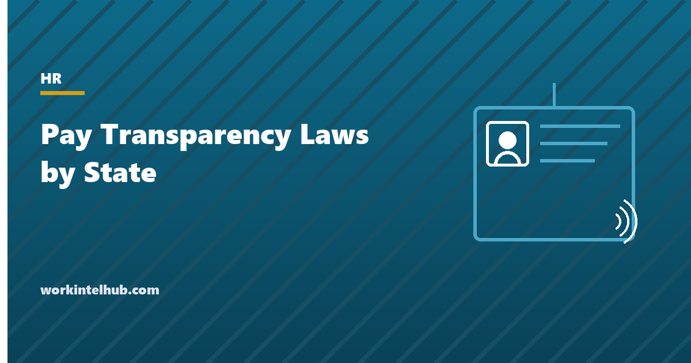

Pay Transparency Laws by State

Pay transparency laws require employers to tell applicants what a job pays, either in the posting itself or on request. As of September 2026, fourteen states and the District of Columbia require a range in every posting, three more require disclosure on request or at interview, Delaware's posting law takes effect in 2027, and several Ohio cities have ordinances of their own. Thresholds run from a single employee to fifty, and the laws follow the job's location, so a remote posting that could be filled in Colorado or New York is covered by those laws wherever the company sits.
The lookup below applies each state's rule to your headcount. The table after it lists every state with a law, and the sections that follow cover what the range must contain, the related salary history bans, and how to write one posting that satisfies all of them.
Pay transparency lookup
Thresholds are applied as most states count them: total employees, not employees in the state, unless the row says otherwise. Remote roles that could be performed in a state with a posting law are generally covered by that law. Verified against the statutes and agency guidance in September 2026; check for amendments before relying on it.
Every state with a pay transparency law
| State | Rule | Threshold | Effective | What the disclosure includes |
|---|---|---|---|---|
| California | Range required in postings | 15 or more employees | 1 Jan 2023 | Pay scale the employer reasonably expects to pay; on request for current employees at any size |
| Colorado | Range required in postings | 1 or more Colorado employee | 1 Jan 2021; amended 1 Jan 2024 | Range, general description of benefits, and the application deadline |
| Connecticut | On request, or before an offer | 1 or more employee | 1 Oct 2021 | Wage range on request or at the time of offer, whichever is earlier |
| Delaware | Range required in postings (from 2027) | More than 25 employees | 26 Sep 2027 | Range and general description of benefits |
| District of Columbia | Range required in postings | 1 or more employee in DC | 30 Jun 2024 | Minimum and maximum, plus whether health care benefits are offered |
| Hawaii | Range required in postings | 50 or more employees | 1 Jan 2024 | Hourly rate or salary range |
| Illinois | Range required in postings | 15 or more employees | 1 Jan 2025 | Pay scale and a general description of benefits |
| Maine | Range required in postings | 10 or more employees | 29 Jul 2026 | Range of pay the employer anticipates relying on; commission-only roles must say so |
| Maryland | Range required in postings | 1 or more employee | 1 Oct 2024 | Wage range, general description of benefits and any other compensation |
| Massachusetts | Range required in postings | 25 or more employees | 29 Oct 2025 | Pay range for postings, promotions and transfers |
| Minnesota | Range required in postings | 30 or more employees | 1 Jan 2025 | Minimum and maximum, plus a general description of benefits |
| Nevada | Automatically after an interview, and on request | 1 or more employee | 1 Oct 2021 | Wage or salary range to applicants after the interview and to employees seeking a transfer or promotion |
| New Jersey | Range required in postings | 10 or more employees | 1 Jun 2025 | Hourly wage or salary, or a range, and a general description of benefits |
| New York | Range required in postings | 4 or more employees | 17 Sep 2023 | Minimum and maximum the employer believes in good faith it will pay; job description if one exists |
| Ohio (Cleveland) | Range required in postings (city ordinance) | 15 or more employees in the city | 27 Oct 2025 | Salary range or scale |
| Ohio (Columbus) | Range required in postings (city ordinance) | 15 or more employees in the city | 3 Dec 2025 (enforced from 1 Jan 2027) | Reasonable salary range or scale |
| Rhode Island | On request, and before discussing pay | 1 or more employee | 1 Jan 2023 | Wage range on request and before any discussion of compensation |
| Vermont | Range required in postings | 5 or more employees | 1 Jul 2025 | Minimum and maximum annual salary or hourly wage the employer expects to pay |
| Virginia | Range required in postings | No headcount threshold | 1 Jul 2026 | Good-faith wage or salary range set by reference to a pay scale, equivalent positions or budget |
| Washington | Range required in postings | 15 or more employees | 1 Jan 2023; amended 27 Jul 2025 | Wage scale or salary range (or a fixed amount) and a general description of benefits |
The remaining states have no state-level posting requirement, though several (Alabama, Oregon, Pennsylvania for public employers, and others) ban salary history questions, and local ordinances exist in Jersey City, Ithaca and elsewhere. New York City's ordinance predates the state law and still applies alongside it.
What counts as a range
Every posting law defines the range as the amount the employer in good faith expects to pay, and most say how that expectation must be formed: by reference to a pay scale, a previously determined range, the actual pay of people in equivalent positions, or the budgeted amount. The practical test is whether the range would survive a regulator asking for the pay scale behind it. A posting of $45,000 to $150,000 for one role does not. Colorado's enforcement and Washington's statutory damages of $100 to $5,000 per violation are the sharpest teeth so far, and both have been used against open-ended ranges.
Several states require more than the range. Colorado, Illinois, Maryland, Minnesota, New Jersey and Washington require a general description of benefits; Colorado requires an application deadline; the District of Columbia requires a statement of whether health care benefits exist; Minnesota allows a fixed rate instead of a range; Maine and Vermont require commission-only roles to say so. Hourly roles disclose an hourly range, salaried roles an annual one, and bonus and commission eligibility is described in words.
Internal postings count in Colorado, Illinois, Massachusetts, Virginia and most other states, which means promotions and transfers advertised internally carry the same range. The range in the posting should match the one in the job description and the offer should sit inside it; an offer letter above or below the posted range is the document a regulator will ask about.
Salary history bans and pay range on request
Most states with a posting law also ban asking applicants what they earned before, and several states without a posting law have the ban alone: Alabama, Connecticut, Delaware, Hawaii, Maine, Maryland, Massachusetts, Nevada, New Jersey, New York, North Carolina (state agencies), Oregon, Pennsylvania (state agencies), Rhode Island, Vermont, Virginia and Washington, with California, Colorado and Illinois among those with both. The bans typically prohibit asking, relying on history to set pay, and in some states asking a previous employer during a reference check. A candidate who volunteers the figure may usually be allowed to, but the safer practice is not to record it.
A second tier of laws gives current employees the right to ask for the range of their own position: California, Colorado, Maine, Maryland, Nevada, Rhode Island and Washington among them. The request usually comes after a colleague's offer is posted with a range above the employee's pay, which is the mechanism these laws were designed to create. An employer that posts ranges without first checking where current employees sit inside them should expect that conversation.
One posting for every state
- Decide which laws apply. The job's location and, for remote roles, every state where it could be performed. Most multi-state employers with more than fifty employees are covered by the strictest law somewhere and post a range everywhere.
- Build the range from the pay structure. A documented pay band for the role, with the posted range being the part of the band a new hire would land in. Keep the band on file; several states require records for three years.
- Add the benefits sentence. "Eligible for medical, dental and vision coverage, a 401(k) with company match, and 15 days of paid time off" satisfies the states that require a general description and harms nothing elsewhere.
- Add the deadline and the fixed-rate rule. Colorado wants an application deadline. Minnesota accepts a fixed rate. A posting with both a range and a deadline is compliant in both.
- Post the same range internally. Promotions and transfers advertised with a range keep internal equity visible and satisfy the states that cover internal postings.
- Check the postings third parties run. Illinois and several other states hold the employer responsible for a recruiter's or job board's posting that omits the range.
- Fix mistakes fast. Virginia gives fifteen business days and Washington five to correct a posting after notice. Have one person who owns postings and can act the same day.
The trend is one direction. Delaware joins in 2027, bills are pending in several more states, and the European Union's pay transparency directive takes effect for member states in June 2026, so employers with European staff are already there. Building the pay structure that makes ranges defensible is the work; the posting is the output.
Key takeaways
- Fourteen states and DC require a pay range in every posting as of September 2026; Connecticut, Nevada and Rhode Island require it on request or at interview; Delaware follows in 2027.
- Thresholds run from one employee (Colorado, DC, Maryland, Virginia) to fifty (Hawaii). Most count total employees, not employees in the state.
- The range must be a good-faith expectation set from a pay scale, equivalent positions or the budget. Open-ended ranges are the enforcement target.
- Several states also require a general description of benefits, and Colorado requires an application deadline.
- Remote postings are covered by the laws of every state where the job could be performed. Most multi-state employers post a range everywhere.
- Salary history bans travel with most of these laws and often reach reference checks. Do not ask, and do not record a volunteered figure.
Frequently asked questions
Which states require salary ranges in job postings?
As of September 2026: California, Colorado, the District of Columbia, Hawaii, Illinois, Maine, Maryland, Massachusetts, Minnesota, New Jersey, New York, Vermont, Virginia and Washington, with Delaware's law effective in September 2027 and city ordinances in Cleveland and Columbus. Connecticut, Nevada and Rhode Island require disclosure on request or at interview rather than in the posting.
Do pay transparency laws apply to remote jobs?
Generally yes. A posting for a role that could be performed in a state with a posting law is covered by that law, regardless of where the employer is based. Colorado, New York and Washington have all said so in guidance. Most multi-state employers post a range on every job for that reason.
What has to be in the salary range?
The minimum and maximum the employer in good faith expects to pay for the position, set by reference to a pay scale, equivalent positions or the budget. Several states also require a general description of benefits, Colorado requires an application deadline, and hourly roles disclose an hourly range. Bonus and commission eligibility is described in words.
What is the penalty for not posting a salary range?
It varies. Washington allows statutory damages of $100 to $5,000 per violation after a cure period; Colorado fines $500 to $10,000 per violation; New York, Illinois and others impose civil penalties through their labor departments; Virginia allows civil actions by the Attorney General and by applicants after a fifteen-business-day cure window. Several states escalate for repeat violations.
Can an employer ask about salary history?
Not in most states with a posting law, and not in several without one, including Alabama, Connecticut, Delaware, Massachusetts, Oregon and Pennsylvania for public employers. The bans typically cover asking the applicant, asking a previous employer, and relying on history to set pay.
Do current employees have a right to know their pay range?
In California, Colorado, Maine, Maryland, Nevada, Rhode Island, Washington and several other states, yes, on request. The request often follows a posted range for a similar role, so employers should review where existing staff sit within the bands before posting.